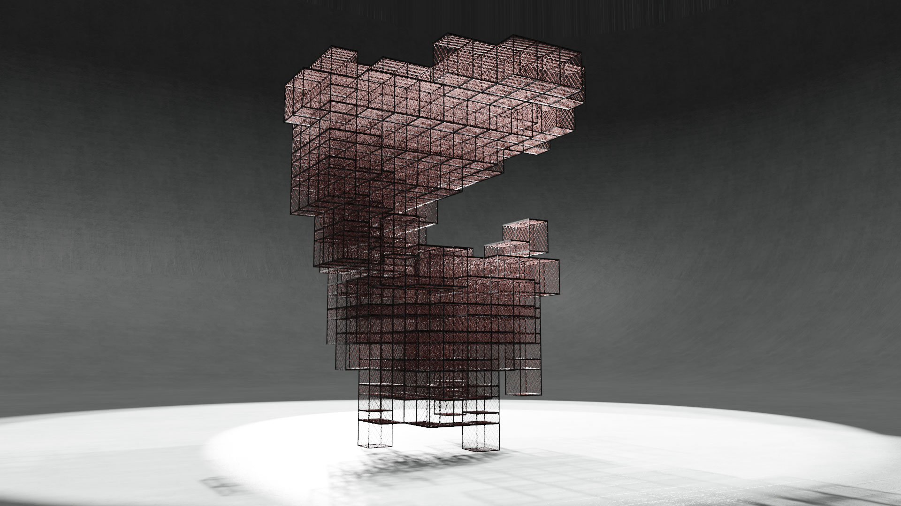
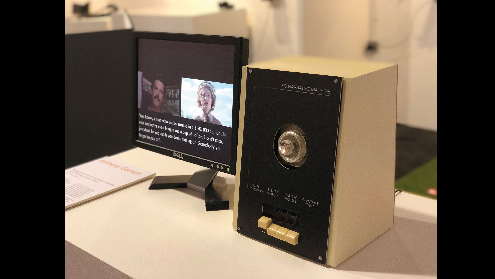

Anthony Pichai Garnett
The Conversation Continues...
Finalist submission for the Affordable Art Fair welcome piece
Working as a part of a team I helped to design and develop the audio responsive / interactive light sculpture "The Conversation Continues".
Following the brands style, the design proposes using lanterns lite 'hot pink' with addressable LED's to create a murmuration of pattern and colour. The lights undulate and interact as agents defined by the flocking algorithm, whilst responding and reacting to the attendees below.
Technologies used: Raspberry Pi, Arduino, OpenFrameworks, JS, C++, C

Scaffold Structures
Ongoing project with London Glass Blowing
In association with London Glass blowing, this is an excerpt from the body in development with Peter Layton. An experimental offshoot, the render exemplifies part of the ideation process as we explored modularity and materials.
Technologies used: Blender, Python
In The Eyes of Machines
GSA Undergraduate submission
"In The Eyes of Machines" is a meditation on the Jungian concept of the ‘Self’, the Buddhist concept of ‘Non-Self’ and what it means to be surveilled. Using facial recognition technology, the algorithm is forced to regressively recycle what it's seen, through the noise of regressively sampling the algorithm continues to see new ‘faces’ generating a ever changing vignette of what the machine 'sees'.
Technologies used: Processing, Analog CCTV camera, Projection mapping, Joinery, Metalwork

Narrative Machines
Interactive video installation for Young Designers show
Inspired by Saussure’s semiotic theory and Wittgenstein’s language-game, "Narrative Machines" contemplates the nature of subjectivity, reality and virtuality.
The piece involves the bold physical presence of a tactile analogue interface repurposed to add tension between the dichotomy of human experience and materiality. Using NLP the work generates uniquely amalgamated text from the clips selected by users creating an experience unique to each participant
Technologies used: Processing, Arduino, Electronics, Woodworking, Natural Language Processing (NLP), Premier Pro
LED rotary screen
Masters submission - proof of concept
A prototype experiment to develop a 3D screen rotary screen using addressable LED's.
(please note: limited effect due to camera shutter speed and LED timing)
Technologies used: Arduino, Electronics, Woodworking
Hand puppet controller
Masters project - prototype
A rapid prototype for an audio controller, I designed and built the mechanisms and circuitry for this group project.
Technologies used: Arduino, Electronics
Stroboscope Sketch
Audio Visual Sketch
Inspired by the concept of a Stroboscope, this is a sketch that uses beat detection on a chosen piece of music, paired with 2 chosen films, this creates an arresting and dream like audio-visual companionship.
Technologies used: Processing
A2B
Glasgow Vintage Vehicle Trust video installation
Made for an event at the Glasgow Vintage Vehicle Trust, A2B is a large scale video sculpture that takes viewers on a nostalgic journey through the liminal spaces evoked through travel. Comprised of scenes of archival footage from the locomotive industry, A2B allows viewers to walk around the film and become immersed in the interplay of blurring colour, shape and shadow.
Technologies Used: After Effects, Projection Mapping
<
page
/ 8
>